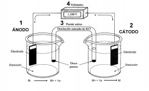

Una celda electroquímica es un dispositivo experimental por el cual se puede generar electricidad mediante una reacción química (celda Galvánica). O por el contrario, se produce una reacción química al suministrar una energía eléctrica al sistema (celda Electrolítica). Estos procesos electroquímicos son conocidos como “reacciones electroquímicas” o “reacción redox” donde se produce una transferencia de electrones de una sustancia a otra, son reacciones de oxidación-reducción.
1. Ánodo: Es el electrodo sobre el que se produce la oxidación. El agente reductor pierde electrones y por tanto se oxida. M ———> M+ + 1e- Por convenio se define como el polo negativo.
2. Cátodo: Es el electrodo sobre el que se produce la reducción. El agente oxidante gana electrones y por tanto se reduce. M+ + 1e- ———> M Por convenio se define como el polo positivo.

3. Puente Salino: Es un Tubo de vidrio relleno de un electrolito que impide la migración rápida de las sustancias de una celda a otra, permitiendo no obstante el contacto eléctrico entre ambas. El electrolito suele ser una disolución saturada de KCl retenida mediante un gel.
4. Voltímetro: Permite el paso de los electrones cerrando el circuito. Mide la diferencia de potencial eléctrico entre el ánodo y el cátodo siendo la lectura el valor del voltaje de la celda
1. Celda Galvánica.
• Permite obtener energía eléctrica a partir de un proceso químico.
• La reacción química se produce de modo espontáneo.
• Son las llamadas pilas voltaicas o baterías.

2. Celda electrolítica.
• La reacción no se da de forma espontánea.
• No se obtiene energía eléctrica. La aplicación de una fuente de energía externa produce una reacción química.